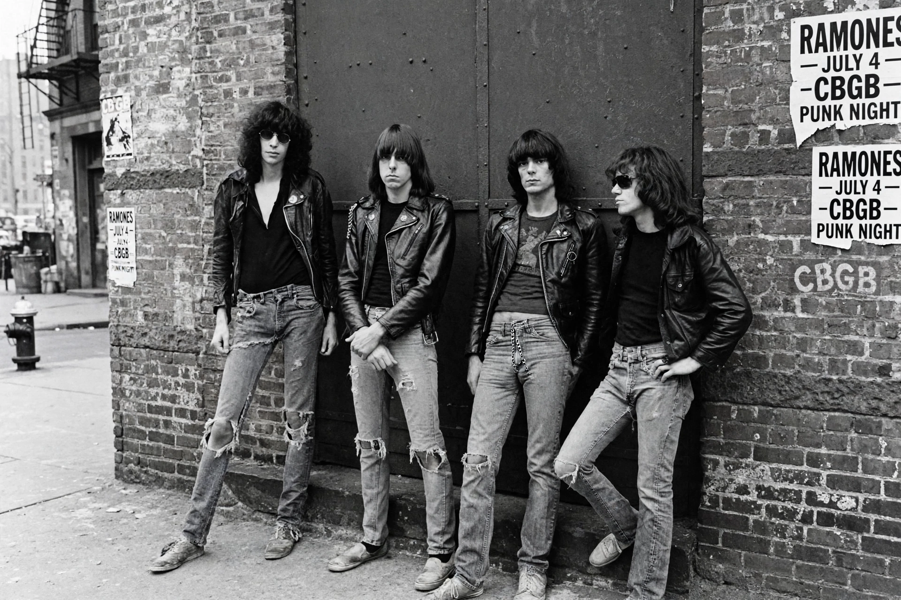

The Ramones were an American punk rock band formed in Forest Hills, Queens, New York City, in 1974. Credited as the first punk rock group, they defined the genre with fast, short songs, buzzsaw guitar, and a uniform of leather jackets and ripped jeans — despite limited commercial success in their lifetime, their influence is immense.

Joey (vocals), Johnny (guitar), Dee Dee (bass) and Tommy (drums) — none related, all taking the surname Ramone — debuted at CBGB in 1974. Their 1976 debut album, recorded cheaply, included "Blitzkrieg Bop" with its "Hey! Ho! Let's go!" chant. A 1976 London tour ignited British punk.
Songs like "I Wanna Be Sedated" and "Sheena Is a Punk Rocker" became classics. The band played 2,263 concerts before retiring in 1996. They were inducted into the Rock and Roll Hall of Fame in 2002; all four founding members died between 2001 and 2014.